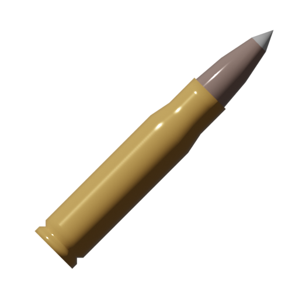

Archmortis .50 Cal
Archmortis .50 Cal
| General |
| Type |
Sniper Rifle |
| Inventory Type |
Major Weapon |
| Frequency |
8
round/sec
round/min
|
| Magazine & Ammunition |
1 + 11 normal

Special
|
| Damage |
| Body |
125 hp/round
? hp/sec
|
| Head (x3) |
|
| Arm (x0.9) |
|
| Leg (x0.75) |
|
| Time to Kill |
? sec
|
| Attachment Compatibilities |
| Stock |
✖ |
| Underbarrel |
✖ |
| Optic |
✖ |
| Magazine |
✖ |
| Barrel |
✖ |
| Laser |
✖ |
Overview
The Archmortis .50 Cal is a special single-shot sniper rifle. It fires an extremely powerful caliber, which is capable of instantly killing entities upon striking their heads. It has an Infinitesimal Scope pre-attached to it and cannot be removed.
Stats
Advanced Stats |
| Mobility |
82% |
| Equip Delay |
1.5sec |
| Reload Type |
Magazine |
| Reload Replenish Time |
3.083sec |
| Reload Finish Time |
3.83sec |
| Muzzle Velocity |
1164m/sec |
| Projectile Mass |
0.007587252kg |
| Projectile Damage Falloff Start Distance |
1024m |
| Projectile Damage Falloff End Distance |
2048m |
| Projectile Damage Falloff Percentage |
0% |
| Recoil Strength |
42 |
| Recoil Strength Increase |
0 |
| Recoil Predictability |
0% |
| Hip Spread Angle |
4.225° |
| ADS Spread Angle |
0.07° |
Technicalities |
| Internal Name |
sr_arch |
Loot
Because it is a special weapon, the Archmortis .50 Cal can only be found in special boxes.
Lore
The Archmortis .50 Cal is manufactured by an unknown company.
History
| Date |
Version |
Info |
| 5/12/2024 |
Pre-Alpha |
This weapon has become documented in this wiki. |
Gallery
Trivia
-
Its name "Archmortis" can be broken down into two parts:
- "Arch-" (prefix) denotes something extreme.
- "Mortis" denotes death.
- Combining the parts together shows that it's about extreme death, fitting the weapon's power, particularly its ability to instantly kill entities on headshot.